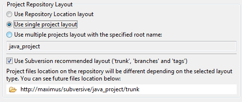
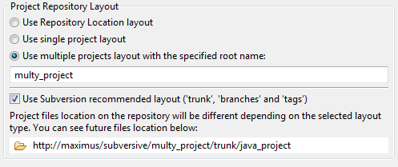
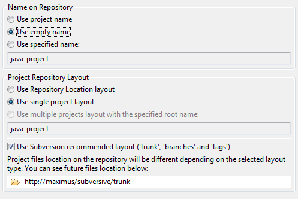
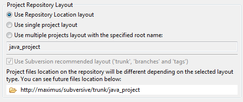

|
|
|
There are several ways recommended by Subversion® how users organize their repositories. By default there are trunk, branches and tags directories on the repository, which contain, correspondingly, trunk copy, branches copies and tag copies of the shared project.
The common recommended layouts are:
Single project layout (there is only one project in each repository folder):
Tip: Use this layout if you want to have several different projects on one repository location.
Multiple project layout (there is a set of projects in each repository folder):
Tip: Use this layout if you want to have a shared multiple project solution.
Monolithic project layout (the trunk folder is in the root of the repository):
Tip: Use this layout if you want to have one repository location for one solution.
Repository Location project layout (layout used in selected repository):
The user is free to change this layout by any way he wish, because branches, tags and trunk are only directories, witch also can be moved, copied or renamed as any other. But while changing repository layout the user must always care about other developers, using a repository. So feel free but accurate while changing repository layout.